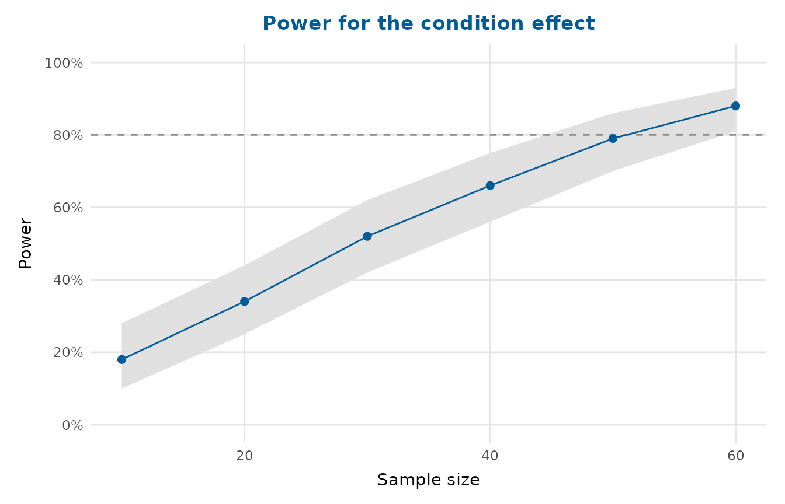

Draws statistical power against sample size, with a dashed line at a target
power (80% by default). The input is usually a power curve produced by
simr::powerCurve(), though a tidy data frame works equally well, allowing
the plot to be redrawn without repeating a power simulation that is often
slow to run.
Usage
power_curve_plot(
x,
target = 0.8,
x_lab = "Sample size",
x_breaks = NULL,
x_expand = NULL,
ribbon = TRUE,
title = NULL,
interaction = c("times", "asterisk", "colon", "space")
)Arguments
- x
A
powerCurveobject from 'simr', or a data frame with a sample size column (nlevels,norx), a power column (meanorpower), and optionallower/upperconfidence limits.- target
Target power, drawn as a horizontal reference line. Use
NAto omit it.- x_lab
X-axis label.
- x_breaks
Approximate number of x-axis breaks.
- x_expand
Optional value(s) to extend the x-axis to.
- ribbon
Whether to draw the confidence band as a shaded ribbon (
TRUE) or as error bars (FALSE).- title
Plot title. If
NULLandxis a 'simr' power curve, the predictor name stored in the object is used.- interaction
Passed to
format_terms()when deriving the title from a 'simr' object.
Value
A ggplot2::ggplot object.
Examples
pc <- data.frame(
nlevels = c(10, 20, 30, 40, 50, 60),
mean = c(0.18, 0.34, 0.52, 0.66, 0.79, 0.88),
lower = c(0.10, 0.25, 0.42, 0.56, 0.70, 0.81),
upper = c(0.28, 0.44, 0.62, 0.75, 0.86, 0.93)
)
power_curve_plot(pc, title = "Power for the condition effect")
